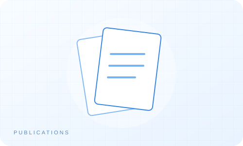

Publications
Peer-reviewed work on AI-supported inquiry, physics learning, and educational technology.

Journal Articles
Cho, M., Jo, Y., Park, S., Choe, S., & Cho, Y. H. (2026). An exploration of activity system contradictions following the legal status change of AI digital textbooks in elementary classrooms. Journal of Korean Association for Educational Information and Media, 32(4), 1861–1889. Read article ↗
Cho, M.*, Kim, E. B.*, Kim, T.*, Kim, E. S., & Song, J. W. (2024). Development of an AI-based educational service for generating convergence inquiries utilizing Big History: OASIS. The SNU Journal of Education Research, 33(3), 65–97. Read article ↗
* Equal contribution
Conference Proceedings
Koh, J., Cho, M., & Keum, S. (2026). Peer and Tutor in One: A Productive Failure-Based Architecture for Multi-role Conversational Agents in Physics Learning. In Artificial Intelligence in Education: AIED 2026 (pp. 150–158). Springer. Read paper ↗
Who I have worked with
Explore the researchers named alongside me in the publications and conference presentations listed in my CV.
Open the collaboration network ↗